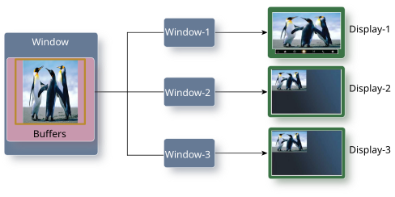
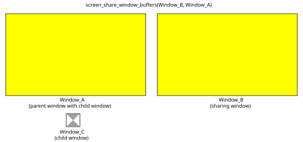
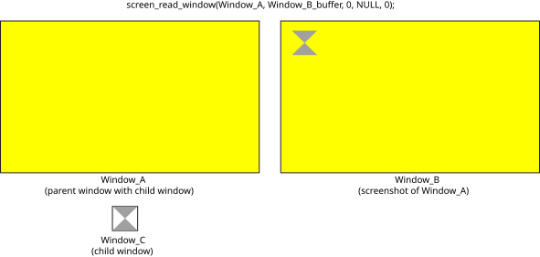

Use buffer sharing when you want one window to display the same content as another.
When windows share buffers, there's only one set of buffers. One window must be the owner of the buffers, and the other window is simply accessing these buffers. These buffers must have been created with screen_create_window_buffers() or associated with screen_attach_window_buffer(). The window that's sharing the buffers doesn't necessarily need any buffers itself because it's relying on the use of the buffers owned by the other window. Naturally, the window that doesn't own the buffers can't set any of the properties of those buffers; the properties of the shared buffers are controlled by the window that owns them.
Updates to the shared buffers can be posted only by the window that owns the buffers (i.e., the window whose handle was identified as the second parameter (share) to screen_share_window_buffers()). Only the buffers that exist when screen_share_window_buffers() is called are shared. What this means is that if the window that owns the shared buffers creates new buffers after screen_share_window_buffers() was called, then the sharing window doesn't have access to the newly created buffers. The old buffers still exist because there's a window associated with the buffers, but they won't be updated. You can call screen_share_window_buffers() again to update the sharing window with any new or updated buffers.
When it comes to displaying the content of these windows, Screen uses the one set of buffers to update all windows.

Buffers of child windows are not included in the shared buffers when you call screen_share_window_buffers(). Only the buffers of the window, not its children, specified in the API function are accessible to be shared. For example, suppose you have one window that has a child window. The parent window is just a yellow background and the child window has a buffer that contains the image of a simple hourglass shape. If another window shares buffers with the parent window, that window won't have access to the child window's hourglass shape.

As you can see, the window (Window_B) that's sharing buffers with the parent window (Window_A) doesn't include the hourglass because that hourglass image is stored in the buffer of the child window (Window_C) and therefore is not included in the shared buffers between Window_B and Window_A.
If what you need is the visible content of one window in another window without worrying about the hierarchy of the original window, use the function screen_read_window(). This function takes a screenshot of a window and stores the result into a buffer you provide. It can be a pixmap or window buffer. This way, you can access the visible content of another window without having to share buffers of a window and its children.
